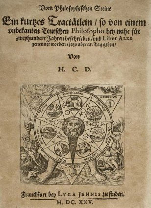
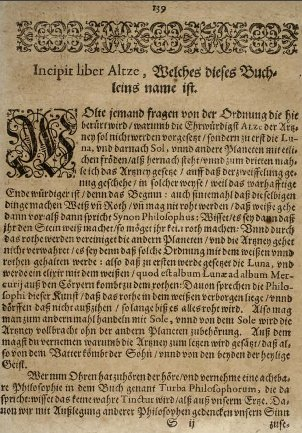
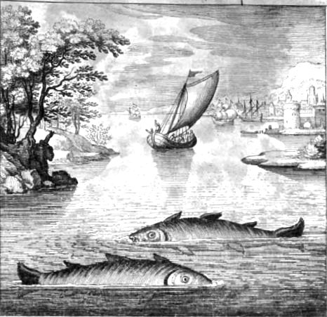
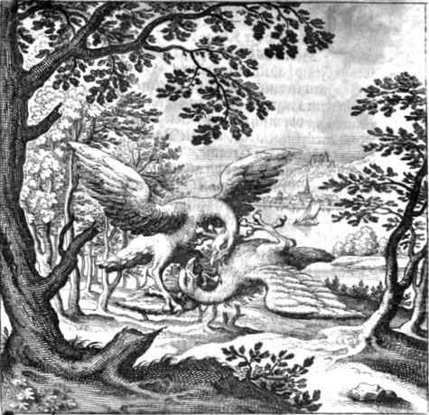

LE LIVRE D'ALZÉ
Liber Alze in Dyas Chymica Tripartita de Grasseus - cliquez pour accéder au sommaire
[pour un commentaire sur l'emblème de cette page, cf. Douze Clefs de Philosophie]
UN TRÈS BREF TRAITÉ CONCERNANT LA
PIERRE PHILOSOPHALE
Écrit par un Sage allemand, inconnu, il y a environ 200 ans et appelé le Livre d'Alzé. Aujourd'hui publié pour la première fois.
LE LIVRE D'ALZÉ
Le texte allemand a été imprimé la première
fois à Frankfurt en 1625 dans le DYAS CHIMICA TRIPARTITA de
Johann Grasshof. Une traduction latine fut incluse dans le Musaeum
Hermeticum par le même éditeur, Lukas Jennis, la
même année [pp. 323-337]

Liber Alze in Dyas Chymica Tripartita de Grasseus - cliquez pour accéder au sommaire
[pour un commentaire sur l'emblème de cette page, cf. Douze Clefs de Philosophie]
UN TRÈS BREF TRAITÉ CONCERNANT LA
PIERRE PHILOSOPHALE
Écrit par un Sage allemand, inconnu, il y a environ 200 ans et appelé le Livre d'Alzé. Aujourd'hui publié pour la première fois.


revu le 18 juillet 2004
Introduction
: le Livre d'Alze apparaît dans l'édition du Musaeum Hermeticum de
1625 et p. 323 dans celle de l'édition de 1678. Le titre complet
est : De
Lapide Philosophico Perbreve Opusculum, quod ab ignoto aliquo Germanico
Philosopho, pene ante ducentos annos, conscriptum & Liber Alze
nuncupatum fuit, nunc vero in lucem editum. Ce livre a
été commenté par Söldner dans le Teutsches Fegfeuer der Scheide-Kunst,
1702, p. 115 [Ferguson, I].
L'ouvrage a été reproduit dans le Dyas Chymica Tripartita,
attribué à Grasseus [Grasshoff].
Johann GRASSHOF [Hermannus Condeesyanus].
Dyas chymica tripartita, Das ist: Sechs Herrliche Teutsche Philosophische Tractätlein, Deren II. von an jtzo noch im leben: II. von mitlern alters: und II. von ältern philosophis beschrieben worden. Nunmehr aber Allen Filiis Doctrinæ zu Nutz an Tag geben, und mit schönen Figuren gezieret. Durch H[ermannus] C[ondeesyanus] D.
4° Franckfurt am Mayn bey Luca Jennis zu finden 1625
Ferguson Wolfenbuttel NU.Cat. British Lib. Wisconsin
1. Ein güldener tractat vom philosophischen steine. p. 11-66
2. Aureum seculum redivivum das ist: Die ulralte entwichene güldene zeit, so nunmehr... offenbahret: Hinricus Madathanus. p. 67-81
3. Vier tractätlein fr. Basilii Valentinii... von dem grossen stäin der uralten weysen maister. p. 3-87
4. Lambspring, das ist: Ein herrlicher teutscher tractat vom philosophischen steine welchen... Lampert Spring... beschrieben hat. p. 87-117
5. Vom philosophischen steine, ein schöner tractat vom einem teutschen philosopho im jahre 1423 beschrieben. p. 121-137
6. Vom philosophischen steine ein kurtzes tractätlein so... Liber alze genennet worden. p. 139-156
7. Hermetico-spagyrisches lustgärtlein: darinnen hundert und sechtzig unterschiedliche, schöne, kunstreiche, chymico-sophische emblematat [von Johann Daniel Mylius].
Ce court traité, inséré dans le Dyas Chymica Tripartita, se présente non pas comme un texte absolument original mais constitue un commentaire de quelques extraits de la Turba Philosophorum. On remarque qu'en quelques passages d'ailleurs, les noms des personnages fictifs de la Tourbe sont faux ; nous avons signalé ces erreurs. Un mot sur le titre : ALZE qui peut avoir deux sens : soit AZOTH soit, plutôt SALZE, c'est-à-dire SEL. Les deux acceptions paraissent possibles.
Incipit du Livre d'Alze, Dyas Chymica Tripartita, p. 139
L'ensemble du texte est disponible, entièrement numérisé, à l'adresse suivante : http://diglib.hab.de/drucke/nd-779/start.htm
Johann GRASSHOF [Hermannus Condeesyanus].
Dyas chymica tripartita, Das ist: Sechs Herrliche Teutsche Philosophische Tractätlein, Deren II. von an jtzo noch im leben: II. von mitlern alters: und II. von ältern philosophis beschrieben worden. Nunmehr aber Allen Filiis Doctrinæ zu Nutz an Tag geben, und mit schönen Figuren gezieret. Durch H[ermannus] C[ondeesyanus] D.
4° Franckfurt am Mayn bey Luca Jennis zu finden 1625
Ferguson Wolfenbuttel NU.Cat. British Lib. Wisconsin
1. Ein güldener tractat vom philosophischen steine. p. 11-66
2. Aureum seculum redivivum das ist: Die ulralte entwichene güldene zeit, so nunmehr... offenbahret: Hinricus Madathanus. p. 67-81
3. Vier tractätlein fr. Basilii Valentinii... von dem grossen stäin der uralten weysen maister. p. 3-87
4. Lambspring, das ist: Ein herrlicher teutscher tractat vom philosophischen steine welchen... Lampert Spring... beschrieben hat. p. 87-117
5. Vom philosophischen steine, ein schöner tractat vom einem teutschen philosopho im jahre 1423 beschrieben. p. 121-137
6. Vom philosophischen steine ein kurtzes tractätlein so... Liber alze genennet worden. p. 139-156
7. Hermetico-spagyrisches lustgärtlein: darinnen hundert und sechtzig unterschiedliche, schöne, kunstreiche, chymico-sophische emblematat [von Johann Daniel Mylius].
Ce court traité, inséré dans le Dyas Chymica Tripartita, se présente non pas comme un texte absolument original mais constitue un commentaire de quelques extraits de la Turba Philosophorum. On remarque qu'en quelques passages d'ailleurs, les noms des personnages fictifs de la Tourbe sont faux ; nous avons signalé ces erreurs. Un mot sur le titre : ALZE qui peut avoir deux sens : soit AZOTH soit, plutôt SALZE, c'est-à-dire SEL. Les deux acceptions paraissent possibles.

Incipit du Livre d'Alze, Dyas Chymica Tripartita, p. 139
L'ensemble du texte est disponible, entièrement numérisé, à l'adresse suivante : http://diglib.hab.de/drucke/nd-779/start.htm
LE LIVRE D'ALZÉ
Ne me tiens pas rigueur, gentil lecteur, de parler premièrement de la Lune, puis du Soleil et des autres planètes et seulement en troisième lieu de notre très excellente Médecine, ALZÉ. [Alze semble avoir été mis pour Azoth, terme qui caractérise le Mercure des alchimistes] Dans ce cas, ce qui vient en dernier est meilleur et plus honorable que ce qui vient en premier. La substance doit d'abord devenir blanche, puis rouge ; Elle ne peut devenir rouge sans être devenu préalablement blanche. Ainsi que Simon le Sage dit :
" Sachez que si vous ne faîtes d'abord la Pierre blanche, vous ne pouvez faire la rouge " [propos que l'on trouve dans le Donum Dei ; nous avons dit ailleurs que Inw, par cabale, était cette pierre blanche qui résultait de la mondification du Mercure].
Parce que par la rouge le reste des planètes est unifié et la Médecine s'avère ignorante si cet ordre n'est pas observé en la matière du blanc et du rouge. Ainsi la Lune est la première saisie et elle fait l'Élixir à partir du blanc qui est le blanc de la Lune jusqu'au blanc du Mercure extrait des corps qui lui vient au rouge. Par suite de quoi nos Sages disent que le rouge est caché dans le blanc qu'ils n'osent pas extraire tant que toute la substance n'est pas devenue rouge. Lorsque la substance a été sujette à l'influence de la Lune, elle peut alors, dans un second lieu, être portée sous l'influence du Soleil qui mènera la Médecine à la perfection sans aucune aide des autres planètes. Par cela vous devez comprendre pourquoi la Médecine vient en dernier, ainsi même que du père provient le fils et l'esprit sain de ces deux là ensemble [l'allégorie est présentée de façon différente qu'à l'accoutumée ; en effet, au lieu de Gabricius et Beja, le symbolisme - emprunté aux traditions chrétiennes - est semblable à celui développé par Lambsprinck dans son De Lapide Philosophorum]. Que celui qui a des oreilles pour entendre, laissez le entendre et comprendre la brève manière de notre art qui est donnée dans la Tourbe :
" Saches que la vraie teinture ne peut être préparée qu'à partir de notre minière. "

De Lapide Philosophorum, Lambsprinck, onzième figure [allégorie du père, du fils et de l'esprit sain]
Concernant cette minière [la Pierre des philosophes, c'est-à-dire le premier Mercure ou Lion vert] je propose donc de te donner la seule explication qui est requise, je serai prudent à la compléter et je confirmerai ma propre opinion par des citations des autres Sages. Je ne parlerai pas uniquement de notre minière, mais également de notre union ou conjonction de l'eau et du Mercure dont Eximenus [Anaximène, cité dans la Tourbe, cf. Idée alchimique, II pour ses autres noms] dit :
" rien de profitable ne peut provenir des éléments sans conjonction et douce coction. " [c'est la maxime des Sages : Solve et Coagula ; la coction correspond à la solution des corps et la coagulation à leur conjonction. aussi bien affirment-ils que la putréfaction est la solution de la conjonction, chose que l'on fait voir parfaitement dans les images du Rosarium Philosophorum]
Notre minière, Lukas [Lucas est donné comme le maître de Démocrite dans la Turba, cf. Idée alchimique, II. Cf. encore Psautier d'Hermophile, cap. XCIX ; Toyson d'Or ] l'appelle la minière blanche et il va par beaucoup d'autres noms en tenant compte des multiples couleurs apparaissant lors des nombreuses étapes du processus chimique [il s'agit d'une matière blanche et brillante que l'on trouvait, jadis, en abondance à Chio ou à Samos]. Mais quoique la jalousie des Sages l'ait décrite sous des noms variés, elle est et demeure une substance unique. Pythagoras [Turba] dit :
" de nombreux noms lui sont donnés, cependant elle n'est rien d'autre que l'unique et vraie Matière et ceci par le développement de sa nature. Les envieux l'ont décrite par les noms de tous les corps comme par exemple argent, plomb, cuivre, etc., en accord avec la variété de ses couleurs ".
Ainsi Lukas nous dit que nous n'avons pas besoin de plusieurs choses mais seulement d'une seule. Diamedes et Basan disent :
" n'y ajoutes pas de substance étrangère car la substance commune des métaux est une chose plus excellente que toutes les autres choses ".
Il s'ensuit que notre Art tout entier est en rapport avec l'eau et une substance double qui améliore l'eau [l'Eau permanente des Sages, Mixte formé du Lion vert et des deux Soufres : le Soleil et la Lune]. Synon nous dit que le soufre et notre minière dérivent d'une chose et sont changés en quatre [cf. introduction à la Turba]. Lukas dit :
" la minière blanche est soumise à la coction jusqu'à ce qu'elle se génère d'elle-même. Elle devient ainsi unie dans les quatre éléments et reçoit une âme vivante. Il n'y a jamais rien de plus qu'une chose mais ainsi qu'un homme consiste en un corps, une âme et un esprit et n'est cependant rien de plus qu'une seule personne, notre substance consiste en un corps, une âme et un esprit. La minière reçoit sa force, son esprit et sa croissance de l'eau ". [Lucas écrit que le Sel, à partir d'un certain moment, au cours de la Grande Coction, parvenu à une sorte d'état de surfusion, coagule et c'est cela que les Sages nomment la multiplication ou, mieux, l'accroissement. Dans les symboles, le corps est représenté par un vieillard ou un roi âgé tenant son sceptre ou un bourdon ; l'âme est le FILS du roi - telle est du moins la représentation qu'en donne Lambsprinck dans le Dyas Chymica Tripartita. Enfin, l'Esprit est, de même, présenté sous la forme d'un ange lui aussi âgé, d'où l'on tire la conclusion assez logique que cet Esprit a plus à voir avec le Corps qu'avec l'Âme, ce en quoi on se trouve d'accord, d'une certaine façon, avec la tradition chrétienne.]
Les Sages disent :
" Si la minière est souvent mortifiée pendant la coction, elle devient entièrement la plus excellente et après le corps obtient une âme, à la façon d'un homme". [dans cette optique, l'Esprit aide donc le Corps à recevoir une Âme. Là encore, images que l'on peut voir dans le Rosarium Philosophorum]
Le corps ne pénètre pas l'âme mais l'âme pénètre le corps car elle est volatile [il est plus exact de dire que l'âme est visqueuse et nous entrons là dans le débat autour de la voie humide et de la voie sèche. Bien des alchimistes se sont fourvoyés à considérer l'une pour l'autre quand il aurait été plus simple de voir laquelle avait d'abord été employée, cf. Geber et la Somme de Perfection]. L'âme qui est cachée dans les quatre parts du corps est appelée soufre. Ces corps sont mâle et femelle et par leur mutuelle opération notre substance devient de l'eau [la dissolution des parties corporelles et adustibles s'opère par la médiation de l'esprit ; ce n'est point autre chose qui est écrit dans la Table d'Emeraude, là où la plupart lisent « meditatione » par corruption du texte, il faut en effet lire « mediatione ».]. Aristée dit :
" observez l'eau indestructible qui en est issue ".
Prenez l'humidité qui s'en dégage. D'autres Sages disent :
" prenez l'eau avec ces substances jumelles et laissez la être asséchée par le moyen de la vapeur qui est comme elle et coagule dans sa propre eau ". [on ne peut mieux caractériser un fondant qui se volatilise ; les substances jumelles sont bien sûr les Gémeaux de l'oeuvre, homonymes spirituels de la constellation, cf. zodiaque alchimique]
Cette eau est aussi appelée poison, elle est le principe de vie, parce qu'elle est une âme extraite de nombreuses choses. [il est absolument impossible de rien comprendre aux écrits de cette sorte si l'on ne fait pas l'hypothèse que ce poison - ioV - n'est autre qu'une chaux métallique, c'est-à-dire l'un de nos oxydes modernes ; ce poison se tourne en principe de vie puisqu'il est le support même de l'âme comme on l'a écrit dans la réincrudation] Tous les corps pénétrés par cette teinture sont activés, tous les corps dont elle est extraite sont détruits. Sa puissance est un sang spirituel qui bien mélangé aux corps les transmute en esprit et se combine à eux en une seule substance. Le corps attire l'esprit [cf. note précédente ; cette notation a une importance fondamentale dans l'Art sacré : à quoi servirait-il, en effet, de teindre l'Esprit ?] et l'esprit teint le corps par une substance spirituelle comme le sang. Pour cette raison les Sages disent :
" tout ce qui possède l'esprit possède le sang ".
Si le venin pénètre le corps, il lui impartit une couleur indestructible et alors l'âme ne peut plus être séparée du corps. Si en volant elle tourne et rencontre son poursuivant, c'est la fin du vol. Les deux s'appartiennent mutuellement, la Nature tend toujours à assimiler des substances de même genre. La couleur finale est indestructible car l'âme imprègne chaque parcelle du corps et elle lui demeure inséparablement liée. [la teinture ou Soufre rouge est infusée en masse dans le Corps ou christophore] Comme l'eau est naturellement froide nous devons nous méfier d'un trop fort degré de chaleur, car si l'humidité de la substance est asséchée, notre oeuvre peut aboutir au néant. [ce que les Artistes appellent « brûler les fleurs ». Aussi Fulcanelli rappelle-t-il que l'on doit voir alternativement la fleur ou l'étoile, à sept reprises. Faute de quoi, la conjonction radicale - voilée sous le mot de sublimation - ne peut opérer.]
Ce qui est appelé l'esprit est le principe actif ou mâle et il ne peut être obtenu que par la dissolution du corps. [plus précisément : le mâle est l'agent ; il n'est actif qu'en tant qu'il est dissous - c'est-à-dire volatile - dans le Mercure, d'où l'expression Mercure animé pour qualifier son caractère philosophique] En accord avec ceci, nous devons comprendre que cette humidité qui en résulte nommément est celle qui est produite, aussi longtemps que deux épouses sont conjointes d'une manière légitime même jusqu'au blanc. Connaîtriez-vous le moment où le corps a été liquéfié par la coction ? Écoutez ce que Bonellus répond :
" Lorsque vous voyez une substance noire flottant dans l'eau, vous devriez savoir que le corps a été dissout ". [il s'agit de l'aile de corbeau qui possède des reflets moirés ; c'est le signe avant courier de la queue de paon qui annonce la conjonction radicale des principes ; rappelons donc que la dissolution est la solution de la conjonction, c'est-à-dire la clef de l'énigme]

De Lapide Philoosphorum, Lambsprinck, première figure [allégorie des trois principes : l'esprit et l'âme sont contenus dans le corps]
Ces deux choses, le corps et l'esprit, en possèdent une troisième qui représente leur substance commune qui à son tour est appelée leur corps. [c'est le moyen de conjoindre les extrémités du vaisseau de nature ; mais il faut noter - et c'est un point commun par ailleurs noté avec le De Lapide de Lambsprinck - que l'esprit est pris ici pour âme. C'est manifestement une erreur. Cette erreur semble du reste plus tard rectifiée si l'on tient compte des éléments propres à la symbolique chrétienne, cf. supra] Elle est également nommée un nuage rond, la mort, la noirceur, l'obscurité, l'ombre, le plomb cendré ou une minière métallique subtile. Ou encore elle est décrite, d'après ce qui est obtenu d'elle, comme l'or qui était caché dans le corps de la Magnésie. [la magnésie est une espèce de substance protéiforme qui a servi aux alchimistes à induire les ignorants en confusion, à l'instar de la rosée de mai dont elle partage d'ailleurs, en tous points, les attributs : il s'agit de l'Aimant, qui doit être distingué du Corps, c'est-à-dire de l'Acier, cf. Matière.] A cause de cela il est dit : " extrait l'ombre de la splendeur ". C'est aussi la substance dont tant de personnes ont parlé. Trois choses constituent la vraie minière, c'est à dire corps, âme et esprit. Ainsi elle est comparée à un oeuf car dans l'oeuf également le poussin se développe à partir de trois choses. Par conséquent, même l'Alchimie est produite à partir des trois choses citées plus haut ainsi que de nombreux philosophes l'ont attesté dans la Tourbe. Le principe mâle ou eau est aussi nommé " la nature ", car l'eau est l'agent naturel qui dissout les éléments des corps et les unit à nouveau. [d'ailleurs, c'est au sens propre du terme l'EAU qu'utilise la Nature - i.e. la voie humide - pour sertir par le temps les riches concrétions que l'on connaît sous les dénominations d'escarboucle, d'hyacinthe ou de grenat, cf. Mercure de nature] A propos de cette eau, il est dit par Fictes [il s'agit en fait de Sictus, plusieurs nommé dans la Tourbe] que sa nature possède la puissance merveilleuse de transmuter le corps en esprit. Quand elle est trouvée seule, elle surpasse toutes les autres choses et constitue un excellent acide, aigre et amer, qui transmute l'or en pur esprit. Sans cet acide nous ne pouvons rien atteindre, ni le rouge, le noir ou le blanc. Quand il est combiné aux corps, alors le corps change en esprit grâce à un feu céleste [il s'agit du Mercure], une teinture immuable et indestructible. Saches également que l'union doit être célébrée par un feu très doux tant que les éléments ne supportent pas un feu violent et jusqu'à ce que l'union ait pris place. Quand une douce chaleur est appliquée, les éléments se dévorent et se consument les uns les autres [c'est l'image classique de la lutte entre le fixe et le volatil : Florestan et Eusebius en quelque sorte. On voit évidemment tout ce que la psychanalyse pouvait retirer de l'alchimie] et plus encore, d'un autre côté, ils se confortent, se renforcent mutuellement et apprennent chacun à supporter l'épreuve du feu. Ainsi les Sages disent :
" faîtes la conversion des éléments et vous trouverez ce que vous cherchez ".
Convertir les éléments c'est faire l'humide sec et le volatile fixe. [la difficulté de compréhension du processus alchimique est là en son entier : faire l'humide sec, c'est signifier la coagulation de l'eau mercurielle ; faire le volatile fixe, c'est rendre cristallin une matière visqueuse sous l'emprise du feu. Il faut noter que tout ceci requiert la voie sèche] Le mari, lui aussi renforce la conjonction pour produire sa propre ressemblance. De nombreuses personnes tentent d'accomplir la séparation et la conversion mais rares sont ceux qui ont connu le succès en établissant une union capable de résister à l'épreuve du feu. La composition qui est préparée à partir de notre précieuse substance n'est diminuée du moindre degré en volume par le feu. Au contraire, elle est nourrie par le feu comme par une mère qui nourrit son enfant. Ce sont les seules choses possédant la puissance de faire le rouge et le blanc, à la fois par l'intérieur et l'extérieur. Rappelez-vous qu'en premier elles ne peuvent supporter qu'un feu doux. Quand vous voyez qu'une blancheur commence à apparaître, votre prochain soucis est de l'extraire de la substance noire. Vous devez alors développer la rougeur qui est cachée en elle. Mais ce que vous devez atteindre en dernier, ce n'est pas par extraction mais par douce coction. Ne vous étonnez donc point que les Sages décrivent notre minière sous de nombreuses appellations, car elle consiste en un corps, une âme et un esprit. Ils y réfèrent aussi comme à deux frères ou un époux et sa femme. Cependant Géber dit que parfois la substance dans son ensemble est seulement nommée corps ou esprit et tant que la dissolution dans l'eau n'est pas effectuée, notre oeuvre ne peut être mené jusqu'à une issue couronnée de succès. Bien entendu, nous ne signifions pas l'eau des nuages [la rosée de mai ; cette eau des nuages est visible sur les gravures du Rosarium Philosophorum] comme le disent les insensés, mais une eau permanente qui ne peut demeurer permanente sans son corps. Ainsi Hermogène [Turba] dit que nous avons à prendre l'esprit caché, nous ne devons pas le mépriser car il partage sa grande puissance avec son frère. C'est uniquement l'union des deux qui peut nous donner la vraie Teinture. L'eau est appelée un acide des plus aigus avec lequel le corps doit être lavé, c'est ce que Socrate nomme le travail de femme et le jeu d'enfant. " Le secret de notre Art est l'union de l'homme et de la femme, le mari reçoit l'esprit tingeant de son épouse. L'union du mari et de la femme coagule le principe féminin et si le tout est transmuté au rouge nous avons alors le trésor du monde dont Synon [Synon est sans doute mis pour Zenon] dit :
" si l'eau est changée en corps, le corps est changé premièrement en terre, puis en poussière et en cendres et vous possédez ce que vous désirez ".
Alors l'oeuvre est accompli et la Pierre contient en elle-même la Teinture dans le corps de la Magnésie. [ce qui signifie que la chaux est dissoute dans le Mercure, c'est-à-dire que le Lion vert s'est transformé en Lion rouge] De cela les Sages disent en conclusion : " Mon fils, extrait son ombre de sa splendeur ". En accord avec ceci, nous avons besoin de l'effort et l'exercice nous est bénéfique voyant que le lait est pour les enfants, mais pour les hommes forts il faut une nourriture plus puissante. Cela est identique dans l'opération de la Pierre. [opération que les alchimistes nomment cibation : cf. Clef X de Basile. On nourrit la première pierre avec le Lait de vierge d'Artephius, qui doit être alimenté avec un feu externe particulier appelé feu de lampe, cf. Filet d'Ariadne de Batsdorff. La pierre agit ainsi, comme l'a indiqué Chevreul, à l'instar du ferment de la pâte de levain]
Maintenant, il est établi par Géber que notre Art doit faire plus pour la substance que la Nature ne le fait, autrement nous n'obtiendrions jamais la Médecine qui a la puissance de corriger et de parfaire les essences des sept planètes ou métaux. Pour cet usage, l'Art de l'Alchimie a été dévoilé par les Sages, mais le débutant doit rester sur ses gardes pour ne point être égaré par leur façon de parler et par la multiplicité des noms qu'ils donnent à notre substance, ce qui leur a été suggéré par sa grande variété de couleurs successives et par le fait qu'elle est composée des quatre éléments. La Pierre doit être saturée de sa propre eau qui doit l'imbiber totalement et puis être soumise à l'action du feu jusqu'à ce qu'elle se change en une sorte de poussière ressemblant au sang brûlé [il s'agit de la salamandre] et qu'elle demeure indestructible au feu. La Pierre est recherchée par les Rois, mais elle n'est trouvée que par ceux qui la reçoivent de Dieu. Elle est publiquement vendue pour de l'argent. Cependant, si les hommes connaissaient sa nature précieuse, ils cesseraient d'y penser à la légère. Dieu, de toute façon, l'a caché au monde et celui qui voudrait accomplir notre oeuvre devrait d'abord établir les bonnes fondations, sinon son ouvrage aboutira au néant. Laissez-moi vous dire que notre Pierre requiert un feu doux et si après des jours peu nombreux, elle meurt et repose dans la tombe, alors Dieu la restaure en son esprit et lui ôte toute maladie et impureté. [putréfaction, cf. Rosarium Philosophorium. Tout ceci survient avant la conjonction] Quand elle est brûlée en cendres, elle doit être convenablement arrosée et saturée de son propre sang jusqu'à ce qu'elle devienne comme du sang brûlé. [imbibition et sublimation] Hermès indique que les deux substances se réjouissent d'être unies l'une à l'autre. Dieu accorde à la substance spirituelle ce que la nature ne peut lui donner. Car la Nature ne possède rien de plus précieux que la vraie Teinture ; Si avec les corps elle devient liquide, cela produit un effet merveilleux. Car la Teinture transforme en sa propre nature chaque chose qui lui est mélangée et la blanchit à la fois en dedans et en dehors. Par une opération et une voie, par une seule substance et par un seul mélange, tout l'oeuvre est accompli, sa pureté est unique et il est parfait en deux étapes, chacune consistant en dissolution et coction avec la répétition de cela.
Votre premier objectif doit être d'obtenir la blancheur par le moyen d'une coction douce et continue ou chaleur. Je sais que les Sages décrivent ce simple procédé par un grand nombre de noms trompeurs. Cependant cette déroutante variété de nomenclatures est instituée dans le seul but de voiler le fait qu'il n'y ait rien d'autre de requis qu'une simple coction. Ce procédé de coction, vous devez néanmoins le mener patiemment et ceci avec la divine permission jusqu'à ce que le Roi soit couronné et vous recevrez alors votre grande récompense. Si vous me demandez si la substance de notre Pierre est coûteuse, je vous réponds que le pauvre la possède, tout autant que le riche.
De nombreuses personnes ont été réduites à la mendicité car elles ont follement méprisé ce qui est hautement estimé par les Sages. Si le Roi et les Princes la connaissaient, aucun d'entre nous ne serait plus capable de l'obtenir. Un seul vaisseau est requis pour le processus complet, il doit être de pierre et capable de résister au feu. [il s'agit en fait d'un vaisseau de verre : oleum vitri]
Une livre du corps de notre minière doit être pris, il sera rendu aussi pur, raffiné et hautement rectifié que les Philosophes le possèdent, comme la vertu des cieux. Le vaisseau doit être placé dans un alambic à réverbère. Le tout est installé sur un feu doux, le vaisseau maintenu hermétiquement fermé, [il s'agit du sceau vitreux d'Hermès qu'il faut savoir briser en fin de coction, selon ce qu'en a dit le mystérieux adepte qui était allé visiter Helvetius - l'auteur du Vitulus aureus] de telle sorte qu'il puisse retenir son compagnon et permettre la même chose pour embrasser la blancheur tel que le dit Lukas. Le vaisseau contenant la minière est placé sur le feu jusqu'à ce qu'il ne puisse y avoir aucune perfection sans chaleur et mélange intime des éléments en référence à ce qui est produit du sang. Lorsque le principe mâle et le principe femelle ont séjourné ensemble pour une durée de quarante nuits, il y a alors émission d'une semence humide et chaude, à cet effet Dieu a libéralement donné beaucoup de sang pour la réchauffer. Cette semence se développe en embryon sustenté par un petit lait et un feu modéré, il croît, plus fort de jour en jour. La croissance doit être aidée par la chaleur mais la chaleur doit être tempérée comme celle du Soleil. Ceci est réalisé en plaçant le matras sur un vaisseau vide, lui-même posé sur quelques charbons rougeoyants. Le processus de coction doit être poursuivi jusqu'à ce que l'alambic soit asséché et que la substance commence à présenter un aspect liquide. L'eau seule est suffisante pour la coagulation et la fixation de l'ensemble comme il nous a été dit par Démocrite. Cette eau est décrite sous des noms variés tels que : soufre, argent-vif, esprit et aussi vapeur car elle peut à peine retenir son compagnon. [elle est nommée d'habitude « fumée blanche »] Il n'y a dans notre Art que deux substances et si je parle de deux, alors je pense à quatre, toutes ces choses n'en requérant qu'une seule par laquelle la Nature comprenant toute Nature est extraite. Ainsi la Nature, du fait de sa nature, se réjouit en elle-même, la Nature conquiert Nature et en elle-même contient Nature. [paroles citées à l'envi, à commencer par Zozime] Dans le même temps, l'une n'est pas opposée à l'autre, mais l'une englobe l'autre et par cela perfectionne l'autre et les Philosophes appellent cette eau, l'eau purifiante. Cette dissolution communique d'abord une noire apparence au corps. La substance doit alors virer au blanc et finalement au rouge. La noirceur exhibe un stade intermédiaire entre la fixité et la volatilité. Aussi longtemps que dure la noirceur, le principe femelle est prévalent jusqu'à ce que la substance entre dans l'étape de la blancheur. Cette blancheur est nommée la première puissance de notre Pierre et l'eau fait référence au plus excellent acide. Vous devez être très prudent afin de ne pas détruire la puissance de cette eau. Avicenne dit que la chaleur naturelle opérant dans les corps humides provoque d'abord la noirceur puis ôte la noirceur et finalement est la cause de la blancheur comme cela peut être vu à propos de la chaux. Il s'en suit que notre substance doit d'abord devenir noire, puis blanche et être réduite en une sorte de poudre. Alors l'âme doit être restaurée à la poudre grâce à un feu puissant ensuite les deux sont soumis à la coction jusqu'à ce qu'elles deviennent premièrement noires, puis blanches, puis rouges et ultimement un bon venin, le tout étant accompli par la séparation des eaux. [la séparation es eaux renvoie à la projection de la teinture dans le Corps de la Pierre, époque d el'oeuvre qui se déroule dans le Sagittaire, cf. zodiaque alchimique] Et maintenant, les eaux étant divisées, cuit la matière et la vapeur jusqu'à la coagulation et ainsi est faîte la Pierre blanche. Alors les eaux sont divisées. Une autre mortification, ou dessiccation suit, appelée nuages ou fumées. La fumée, bien coagulée avec ses fèces devient rapidement blanche. Rôti alors la minière blanche qui peut donner naissance à elle-même. Ainsi la noirceur est vaincue, l'esprit est restauré car l'esprit ne meurt pas mais vivifie le corps et l'âme. Plus notre minière est parfaitement purgée et soumise à la coction, meilleure elle devient jusqu'à ce qu'à la longue elle se condense en Pierre. Mais elle doit être dissoute à nouveau et soumise à un feu puissant jusqu'à ce qu'elle prenne l'apparence du sang brûlé. Si cette Pierre est ajoutée à toute substance, elle la teint en or. Les Sages parlent d'elle comme d'une sorte de racine [ils veulent alors parler de l'humide radical métallique, c'est-à-dire de ce qu'ils considèrent comme la racine même des métaux ; c'est cela qu'ils appellent leur quintessence]. Prenez, disent-ils, la vertu entière de la Teinture et concentrez-la dans la Racine. Si un corps ne contenant pas d'éléments terrestres reçoit cette teinture, il en obtient plus de bénéfices que les corps moins excellents. La Pierre domine tout ce que à quoi elle est appliquée et elle teint les corps étrangers de sa propre couleur. Le feu sec teint les corps, l'air les renforce, l'eau blanche lessive leur noirceur et leur terre reçoit la Teinture. Concernant la coction requise au développement de notre substance, les Sages se sont exprimés eux-mêmes dans une grande variété de voies. Observez Hermès qui dit que cela doit être répété encore et encore jusqu'à ce qu'à la longue, la couleur rouge soit obtenue. Ici est la stabilité de tout l'oeuvre. Après cela, l'oeuvre affecte beaucoup, beaucoup de couleurs, n'incluant pas le rouge qui lui n'apparaît qu'à la fin. Ainsi le blanc doit le précéder. Appliques-toi à oeuvrer selon les régimes du feu et tritures. L'eau susmentionnée volatilise tous les corps même les grossiers et les pénètre jusqu'à ce qu'elle les assimile à sa propre nature [là encore, il s'agit de l'eau permanente ; mais elle ne prend cet aspect qu'après que le Lion vert ait donné naissance au Lion rouge]. Saches que sans opérer sur les corps jusqu'à ce qu'ils soient détruits et leur âme extraite, tu ne teindras jamais aucun corps, car rien ne teint qui n'a pas été lui-même précédemment teinté. Si le corps est fluidifié et brûlé il se penche de lui-même vers son procréateur en devenant une subtile Magnésie et tournant vers la terre la fait spirituelle et vivifiée. Avant que la blancheur finale du premier stade ne soit atteinte, la substance vire initialement au noir, puis à l'orange et au rougeâtre (qui de toute façon est différente de la rougeur finale de l'étape ultime). Ces couleurs ne doivent vous troubler en aucune manière tant qu'elles sont évanescentes et simplement transitoires.

De Lapide Philosophorum, Lambsprinck, huitième figure [fixer le volatile et volatiliser le fixe : Solve et Coagula]
De ce que j'ai dit, vous pouvez en déduire que notre substance est trouvée dans l'or caché dans la Magnésie, [la teinture dissoute dans le Mercure ; l'or alchimique qui n'a nul rapport avec l'or vulgaire. C'est lui que Fulcanelli nomme le rayon igné solaire] c'est une chose composée du soufre d'un soufre et du mercure d'un mercure. Et comme la substance de notre Pierre est unique, unique est sa méthode de préparation. Pour cette raison n'écoutes pas ces alchimistes ignorants et frauduleux qui parlent de différentes sortes de sublimation et de distillation. Fait la sourde oreille à ceux qui disent que la substance de notre Pierre est de la poudre de Basilic. [le basilic est cet oiseau chimérique aux yeux pétrifiants dont nous parlons à propos de l'une des aquarelles de l'Aurora Consurgens. Rappelons que son antidote est la belette, armée d'un miroir.] A propos du temps requis à la préparation, commences en hiver qui est humide et extrait l'humidité jusqu'au printemps quand toutes les choses deviennent vertes et lorsque notre substance elle aussi exhibe une variété de couleurs. Pendant l'été, la substance doit être réduite en poudre par le moyen d'un feu puissant. L'automne, saison du mûrissement doit témoigner de sa maturité ou rougeur finale. A propos des mouvements des astres et des planètes, tu n'as pas besoin de t'en soucier. Notre substance est un corps contenant un esprit capable de rendre le verre malléable [cf. Atalanta fugiens sur le verre malléable et ce qu'en dit Saint Claire Deville] et de tourner les cristaux en Escarboucles [c'est nommer le rubis]. Une goutte de notre Élixir, pas plus grosse qu'une goutte de pluie, suffira à teindre et transmuter un corps mille fois plus gros qu'elle. Ce remède des plus nobles fut convoqué, comme toutes les autres choses, pour l'usage de l'homme, car l'homme est la plus glorieuse des créatures de Dieu et le seigneur de la terre entière. Ce remède lui fut donné pour l'usage de la préservation de la jeunesse, l'évacuation des maladies, la prévention de la souffrance et lui procure tout ce qu'il requiert. Notre Élixir est meilleur que toutes les préparations médicinales d'Hippocrate, Avicenne et les autres. De lui peut être préparé un antidote potable qui possède le pouvoir de guérir la lèpre. Comme le feu purge et raffine les métaux, ce Remède restaure sa chaleur naturelle au corps humain, chasse toutes les matières détruisant la santé et le fortifie contre toute forme concevable de maladie. Sa vertu est infiniment supérieure à celle de la poussière d'or potable qui est utilisée par les Gentils comme préservatif.
Grande et merveilleuse est la puissance de l'or qui sommeille dans la Magnésie, tant pour la purification du corps humain que pour la transmutation des métaux. Que puis-je dire de plus ? Toutes les choses que j'ai fidèlement décrites, je les ai vues de mes propres yeux et touchées de mes propres mains.
Lorsque je préparais la substance après avoir découvert la vraie méthode, je fut si sérieusement contrarié par les personnes avec lesquelles je vivais, que je fus sur le point de tout abandonner par désespoir. A la longue, je communiquai ma découverte à un ami qui exécuta fidèlement mes instructions et mena l'oeuvre à son issue, couronnée de succès. Dieu doit être loué pour ce cadeau béni, monde sans fin.
Amen.
Fin